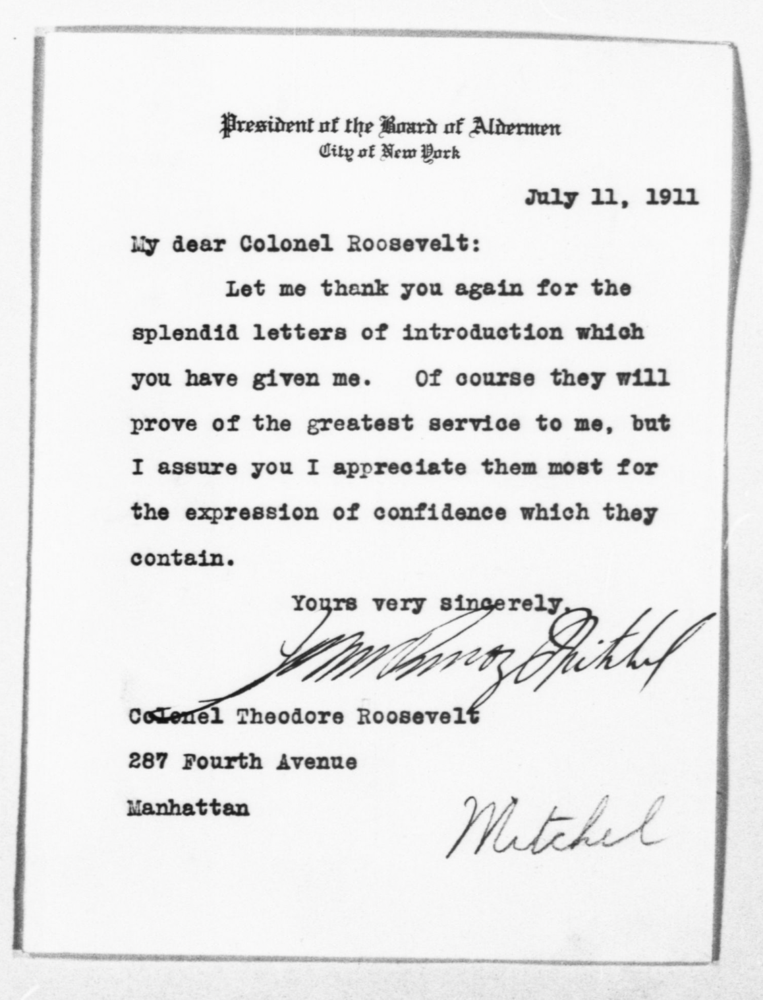

Tasmania, The Great Irish Famine, and the Mayor of New York
Stories From Long Nights At The Bar

Evenings alone in new cities tend to involve cold beer and books in dark bars down strange alleyways. For centuries, this has served as an unpatched glitch for meeting new and unorthodox people: until you try it, you won’t believe how many people will approach you to ask either what book you’re reading, or why you are reading at a bar.
So it came to be that one Friday night in Sydney’s Kings Cross, conversation began to flow with a middle aged couple. Why are you reading the newspaper, they ask. Well I figure I need to have a good grip of what’s going on in this country as I’m spending time here, and newspapers seem as good a way as any of getting up to speed. Yeah, right, came the response. There’s heaps of stuff going on right now but none of it is good.
Where are you two from? Tasmania, have you been yet? It’s beautiful. No, but it’s very high on my list, I hear parts of it are like the west coast of Scotland. Yeah right. Yeah.
What’s a cool story about Tazzie you could tell me?
I’ve got a good one, said the woman. It involves a ring, an Irish freedom fighter and criminal, an escape plan and the Mayor of New York. It goes something like this.
A couple of hundred years ago during the Great Famine in Ireland, a Man became radicalised by what he was seeing, and became an activist and started writing a newspaper fighting back against British rule. The British Empire would not tolerate this, and arrested him on treason charges. He was exiled from his country under British rule and sent down here, down to Tasmania, as punishment. Arriving in roughly 1850, the Man spent his first years in Tazzie in a state of depressed sadness, yearning to be back in Ireland and off the shores of these strange lands, allowed to wander under limited freedom with a motley crew of fellow criminals: after all, where could he possibly escape to?
Over the ocean in New York, a group of Irish refugees, activists and freedom fighters called the Irish Directory of New York were hatching a plan on how they could rescue the Man. They grouped together and saved enough money to send one of their own to Tasmania: they were going to break the man out. Months passed, and the Man heard nothing. Then one day he is met by a man from New York. Leading a small group of convicts, the pair flee inland.
Lost, they bump into a Tasmanian farmer. This young farmer was a typical man of his time: a young wife and 14 children, working the land before him. Won over by their story, this farmer takes them in, then moves them further inland to another one of his properties and out of reach of the police. As June rolled into July, the farmer, the companion and the Man made a final effort to reach the shores. There, the Man assumed the false identity of a priest and boarded a boat to Sydney, finally ending up in New York later that year.
The Tasmanian farmer heard nothing, nor did he expect to. Then one day a package arrived. Inside was a beautiful gold ring, shaped like a leather strap with buckles on either side of a central gold horse shoe enclosing a tomato coloured Irish bloodstone. An inscription inside simply read: “Thomas Field, from the Irish, Directory of New York. 1853.”
The woman tailed off, mentioning there was a vague connection to a Mayor of New York and the Tasmanian Parliament that she couldn’t really remember, and that she had seen the ring when she was a child back in Tasmania. We had another drink and then I headed home.
I thought of that story over the next few days. Returning to my notes, I decided to plug them into ChatGPT and asked it to try and see which parts it could find in historical records of births and deaths, or diaries, or newspapers from the era - and then I went for a swim.
What it returned was, in my view, remarkable. That Irish Man was called John Mitchel. He had been a radical Irish freedom fighter, and started his own paper calling for violent uprising against the British Government. His journey to Tasmania had taken him via Bermuda where he was imprisoned aboard the Dromedary, a ship serving as a floating prison. Severe asthma attacks in the humid climate had prompted the authorities to move him further down south to Tasmania. In America, he would become an outspoken defender of slavery and supported the Confederacy.
His grandson, John Purroy Mitchel, would go on to become the second youngest ever Mayor of New York, serving from 1914 to 1917 during World War I. He would die before his 40th birthday in a military flying accident, and none other than the former President Theodore Roosevelt served as a pallbearer for the funeral. The pair had met during their time in the New York political scene, where they had formed a working relationship and sent many letters back and forth discussing matters from unemployment figures to luncheons.
Back in Tasmania, the farmer was actually a rich landed gentry man called Thomas Field. He would go on to serve as a member of the first Tasmanian Parliament, and had a ferocious interest in breeding horses and cattle. Drawn by the lure of the Great Exhibition taking place in Melbourne some years later, he went to visit. While there, a doctor convinced him to have an operation on his knee, and he died of sepsis.
Finally, nearly two hundred years later, the family apparently still has the ring in their possession.